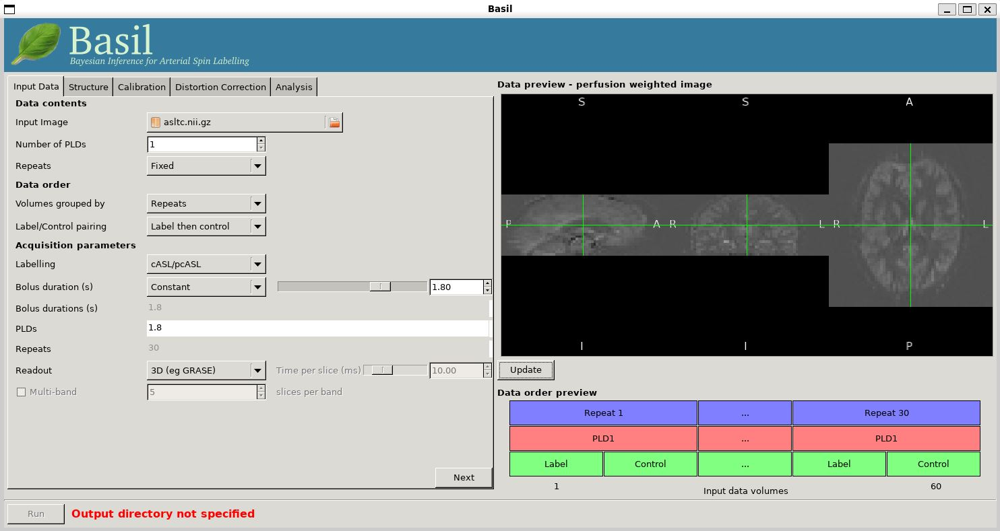

The purpose of this exercise is to perform a very simple analysis of ASL data to produce a perfusion image as an introduction to using ASL, esentially following the procedure outlined in Chapter 1 of the Primer using the BASIL GUI in FSL. There is a similar example using the command line tools here.
NOTE that we reccomend you use FSL v6.0.1 (or higher) for these exercises.
For this exercise you should be using the Single PLD pcASL dataset set. This ASL data was acquired using pcASL labelling with a label duration of 1.8 seconds and a post-labelling delay (PLD) of 1.8 seconds, following the recommendations of the ASL consensus paper.
Get the data
It is always a good idea to take a look at the raw data just to check that nothing has gone horribly wrong in the acquisition and ensure you know exactly what you are dealing with.
View these images in fsleyes:
fsleyes aslcalib.nii.gz -dr 0 1500 asltc.nii.gz -dr 0 1500
Notice that:
Since the data looks okay we can proceed to the calculation of a perfusion-weighted image (PWI). For this we will use the 'preview' feature of the BASIL GUI, essentially we are generating the PWI to check that the data is okay for further analysis.
To launch the GUI at the command line you will need to type
asl_gui. Note that if you have downloaded the
'pre-release' yourself, you may need to provide a path to the
installed version of the GUI, e.g. /Users/{blah}/Downloads/oxford_asl/asl.gui
Once it has launched you will find yourself on the 'Input Data' tab, you should:
asltc.nii.gz as the 'Input
Image'.At this point the GUI should look like the screen shot below and a PWI will have appeared in the 'Data Preview' pane. At this point in our analysis this is reassuring, if we didn't see something that looks roughly like this, we might check if the data order that the GUI is expecting matches that in the data. We could alter the 'Data order' settings if needed and update the preview again'.
Note also, beneath the 'Data Preview', that there is a 'Data order preview'. The idea of this graphic is to help visually to confirm that the way that the GUI is intepreting the ordering of volumes in the data matches what you are expecting. In this case we have a single PLD repeated 30 times with the label and control images paired in the data (this is pretty common). What the 'Data order preview' shows is the first instance of the PLD in purple, showing both the label and control (hatched) volume. Each subsequent repeat of the same PLD is coloured green, again showing that we have a label follwed by control (hatched) volume.
You can try a different 'Data order' option to see what happens. Change 'Label/Control pairs' from 'Label then control' to 'Control then label'. This switches the expected order of label and control images within the pair. If you then udpate the preview you will find that the contrast reverses, the perfusion now has the wrong 'sign'.
We have checked the PWI, thus we can proceed to final quantification of perfusion, inverting the kinetics of the ASL label delivery and using the calibration image to get values in the units of ml/100g/min.
To do this we need to tell the BASIL GUI some information about the data and the analysis we want to perform.
You can now hit 'Next' and you will be taken to the next tab. For this (simple) analysis we do not want to use a structural image, so we can move on by clicking 'Next' again. Or we could skip stright to the 'Calibration' tab using the menu across the top.
On the 'Calibration' tab, 'Enable Calibration' first, then load
the calibration image aslcalib.nii.gz. Change the
'Calibration mode' to 'voxelwise', and set the 'Sequence TR (s)' to
be 4.8.
Finally, we need to set the analysis options: either skip to the 'Analysis' tab or click 'Next' twice.
On the 'Analysis' tab, choose an output directory name, e.g.,
oxasl. And, select 'Analysis which conforms to White
Paper', so that we know the analysis is using the same default
parameter values proposed in the ' ASL White Paper' quantification
formula. Note that in the lower left corner the GUI is now telling
us that we are 'Ready to Go'. At this point you can click 'Run' in
the lower right corner.
To view the final result:
fsleyes oxasl/native_space/perfusion_calib.nii.gz
Note that if you just supply a name for the output directory (not a full path), as we have here, this will be placed in the 'working directory', i.e. whicheveer directory you were in when you launched the GUI.
You will find something that looks very similar to the PWI we viewed before, but now the values at every voxel are in ml/100g/min.
You will also find a PWI saved as
oxasl/native_space/perfusion. This is very similar to the
PWI displayed in the preview pane, except that the kinetic
model inversion has been applied to it, this is the image
pre-calibration.
We can do a better job of the analysis of this data, by applying some corrections during analysis, this is the subject of Example 2.